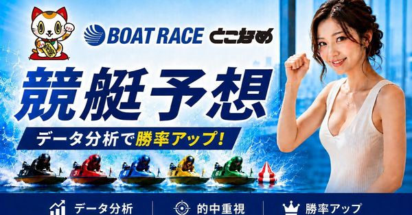
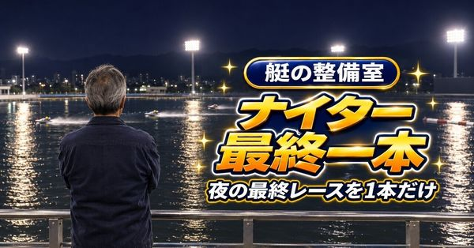
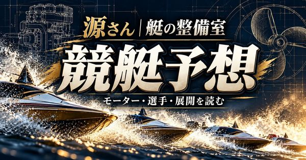

Luna
ナンバーズ・ロト予想と占い
🌙月詠みの数秘術師ルナ 月の満ち欠けと数秘術でナンバーズを予想✨ 翌日のナンバーズ3、ナンバーズ4の予想数字を夜に配信🎯 また、ロト6とロト7も抽せん日の夜に予想提供しております✨ 占いの力で数字の波動を読み解きます🔮 ⚠️予想は占いに基…
フォロワー 1,622
ナンバーズ・ロト／競艇／競馬
note で予想記事を書いているクリエイターを紹介しています。掲載は登録順で、順位はつけていません。
9 人のクリエイター3 カテゴリ
ナンバーズ・ロト予想と占い
🌙月詠みの数秘術師ルナ 月の満ち欠けと数秘術でナンバーズを予想✨ 翌日のナンバーズ3、ナンバーズ4の予想数字を夜に配信🎯 また、ロト6とロト7も抽せん日の夜に予想提供しております✨ 占いの力で数字の波動を読み解きます🔮 ⚠️予想は占いに基…
フォロワー 1,622
ナンバーズ・ロト予想
龍斎（りゅうさい）です。易・数秘術・暦を重ね、季節の移ろいから数字の意味を読み解きます。ナンバーズ3・4を中心に、ロトの予想もお届け。数字との出会いを、日々の楽しみに。 占いによる予想であり、当せんを保証するものではありません。
フォロワー 323
ナンバーズ3・4予想（家計簿目線）
夫と小学生ふたりの4人家族。家計簿歴の長い主婦、ゆかりです。ナンバーズ3・4の候補と、外れも含めた成績の記録を毎日のせています。「予算を決めて、楽しむぶんだけ」。同じように家計をやりくりしている方の、ちょっとした楽しみになればうれしいです。
フォロワー 314
競艇（ボートレース）予想
競艇（ボートレース）の予想記事を note で公開しているクリエイターです。
フォロワー 1,541
競艇（ボートレース）予想
源さんだ。競艇は勝率・ST・モーター・進入・展示を一つずつ見て、三連単を組み立てる。派手な煽りより、狙いと不安材料まで正直に伝えるのが俺のやり方だ。
フォロワー 722
競艇予想（レースのリスク診断）
そのレース、リスクを診断します。数字でリスクを見るのが好きな会社員、しおりです。競艇の1レースごとに、インの安定度と崩れやすい条件を「低・中・高」で判定。分からないときは「判定保留」と正直に書きます。的中をお約束するものではありません。舟券…
フォロワー 107
競艇予想（仲間と楽しむ現場の空気）
競艇とお酒が大好きな20代のルカです🍻 うちが舟券仲間とのオフ会トークで、今日のレースの見どころをゆるっと話すよ。予想はデータで落ち着いて。お酒は20歳以上・ほどほどに。的中を保証するものではないので、舟券はご自身の判断で楽しもうね。
フォロワー 40
競艇予想（艇の色の色彩占い）
今日は何色の艇が来る？色彩占い師のマダム・アイリスです。艇の6色（白・黒・赤・青・黄・緑）と、その日の運気の色を重ねて、レースの見どころを占います。占いはお楽しみの演出として読んでくださいね。的中を保証するものではありません。舟券の購入はご…
フォロワー 66
南関東・JRA の競馬予想
RINA、22歳🐴 自称AI投資家、普段はギャルモデル💋 時給で働くのコスパ悪くない？ってなって、AIと統計を独学したら競馬にハマった😂 平日は南関東、土日はJRA。人気じゃなくて期待値と数字で予想してく📊 想定外は普通にあるけど、RINA…
フォロワー 245
人気の記事11/20 地方 競馬予想結果｜大井4R的中🎉 1勝4敗
三連単20点（2026-10-29〜2026-11-26）：92レース・的中率 28.3%・回収率 58.3%
各クリエイターの、スキの多い記事を新しい順に並べています。

Saki2026年11月27日常滑9R✨現場リーク📈期待値MAX🎯
Gen【的中結果】競艇予想｜2026/11/26 若松 12R｜源さんのナイター最終一本【無料公開】掲載クリエイターの最新の記事です。

Gen競艇予想｜2026/11/27 桐生 11R｜源さんの一戦点検 ルカ競艇予想｜2026/11/27 蒲郡 11R｜ルカの舟券仲間トーク
ルカ競艇予想｜2026/11/27 蒲郡 11R｜ルカの舟券仲間トーク マダム・アイリス競艇予想｜2026/11/27 丸亀 10R｜マダム・アイリスの色占い
マダム・アイリス競艇予想｜2026/11/27 丸亀 10R｜マダム・アイリスの色占い Gen競艇予想｜2026/11/27 桐生 10R｜源さんの一戦点検
Gen競艇予想｜2026/11/27 桐生 10R｜源さんの一戦点検公表された結果をもとに、当サイトが集計した数字です。予想や的中を示すものではありません。
週に1レース、重賞の出走馬を JRA 公式の出馬表・成績をもとに表で整理しています。予想や印はつけていません。
note で予想や分析の記事を続けて公開している方の掲載を受け付けています。